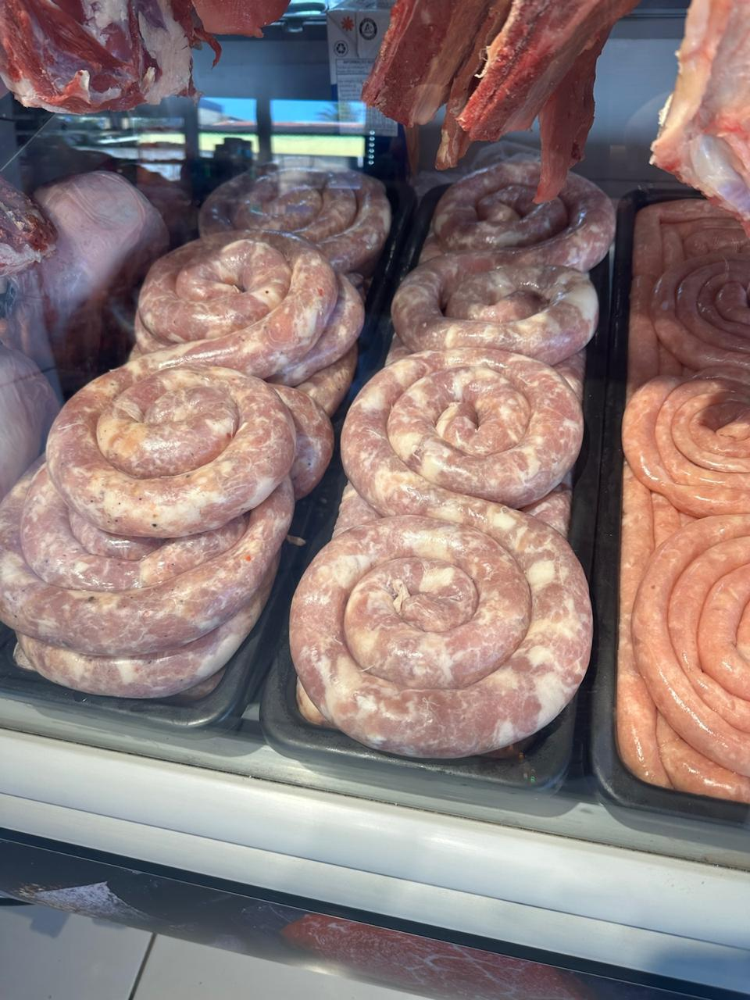
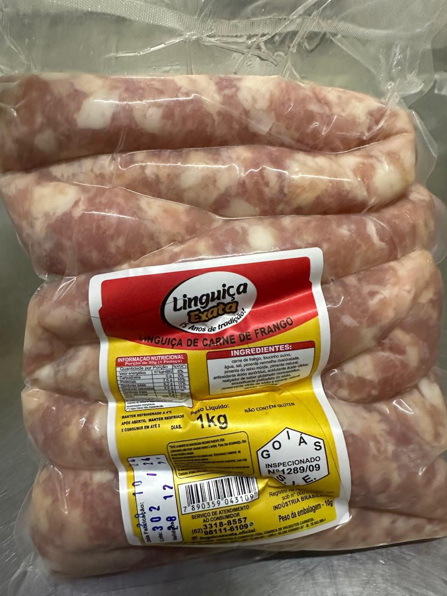
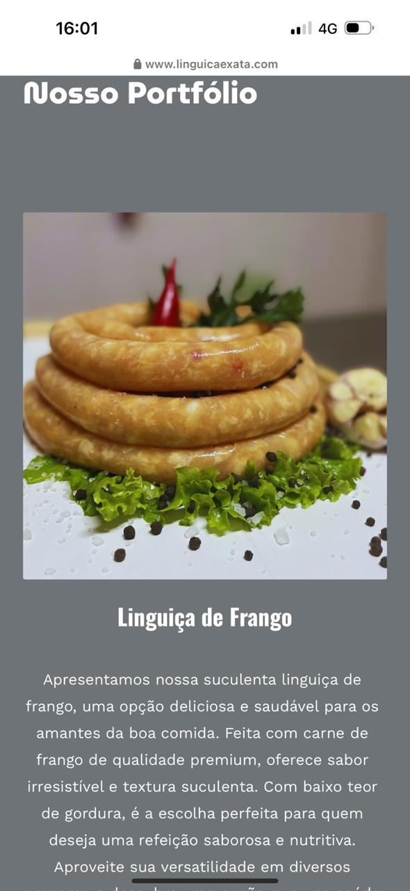
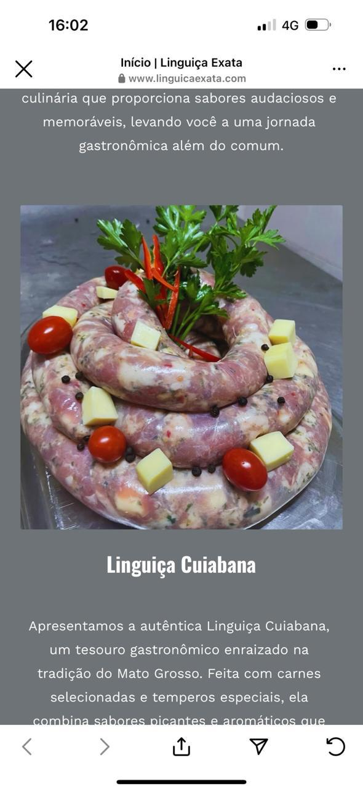

Comissão: 10% | Certificação: INMETRO (2 certificados vigentes) | Base: Depósito próprio Brasília
Distribuidora de fios e cabos elétricos certificados INMETRO com depósito próprio em Brasília. Operação consolidada: 150+ lojas atendidas no DF, entrega 24h, estoque local. Vantagem: INMETRO como barreira de entrada (14 marcas multadas em 2024), entrega ágil, preço sem atravessador.
3 perfis de cliente: Lojas de material de construção (ticket R$300-500), construtoras/empreiteiros (R$1.500-3.000), grandes obras/redes (R$5.000+).
Atua em 8 regiões do DF com estratégia de rota diversificada. Clientes consolidados: Castelo Forte, Casa Forte, e 150+ lojas regionais de material de construção.




Objetivo: Prospectar 30 lojas de bairro. Portfólio impresso + amostra física (tato convence mais que PDF). WhatsApp com oferta de tabela.
Meta: 30 visitas, 10 lojas comprando, R$3.000 faturados.
Objetivo: Clientes da Semana 1 indicarem outras lojas. Iniciar prospecção digital (Instagram + OLX). Iniciar prospecção de obras.
Meta: +5 lojas, R$5.250. Acumulado: R$8.250.
Objetivo: Visitar 3 construtoras de médio porte. Oferecer amostra grátis para engenheiro responsável ("testa nosso fio na sua obra").
Meta: +2 construtoras. Ticket médio R$2.000. Acumulado: R$12.250.
Objetivo: Campanha de reposição para lojas que compraram. Visitar 10 novas lojas (zona norte). Orçamentos para +5 construtoras. Dia de fechamento.
Meta: R$12.750 na semana. Total Mês 1: R$25.000 batido.
Reabastecer lojas fiéis. Mapear 5 grandes redes. Preparar material institucional.
| Segmento | Mês 1-2 | Mês 3 | Mês 4-5 | Ticket |
|---|---|---|---|---|
| Lojas de bairro | 25 clientes | 40 | 50 | R$400 |
| Pequenas construtoras | 3 | 8 | 15 | R$1.500 |
| Médias construtoras | — | 2 | 5 | R$3.000 |
| Grandes obras/redes | — | — | 2 | R$5.000+ |
| Mês | Faturamento |
|---|---|
| 1 (Jun) | R$15.000 (período parcial) |
| 2 (Jul) | R$23.500 |
| 3 (Ago) | R$32.400 |
| 4 (Set) | R$46.500 |
| 5 (Out) | R$65.000 ✅ |
30 lojas ativas → contratar ajudante de entregas.
R$30k/mês → investir em estoque (SKUs 1,5mm e 2,5mm).
10 construtoras ativas → tabela progressiva por volume.
R$45k/mês → contratar vendedor externo (comissão 5%).
R$60k/mês → estoque cabos PP maior bitola (maior margem).
Olá [Nome], aqui é o Marcos da Condel Condutores Elétricos. Já fornecemos pra Castelo Forte e Casa Forte aqui no DF. Fio com INMETRO, entrega no mesmo dia e preço que dá boa margem pro revendedor. Quer ver nossa tabela?
1. Olhar o balcão — ver se tem fio exposto e de qual marca 2. "Tudo bem? Sou da Condel — entrega mais rápida e preço melhor" 3. Mostrar amostra física do fio (tato convence mais que PDF) 4. "Qual bitola você mais vende? 1,5mm e 2,5mm? A gente tem o melhor preço nessas duas." 5. "Vou deixar uma caixa experimental. Se vender em uma semana e a margem for boa, acertamos um pedido maior."
Prezado(a) [Nome], Me chamo Marcos Domingos, distribuidor da Condel Condutores Elétricos em Brasília. Trabalhamos com linha completa de fios e cabos com certificação INMETRO — ideais para memoriais descritivos e vistorias do CREA. Diferenciais: • Entrega direto no canteiro em até 24h (DF) • Preço competitivo para obras de médio/grande porte • Depósito próprio em Brasília • Linha econômica para obras sem laudo Gostaria de enviar uma cotação?
"Que bom! Significa que você conhece bem o mercado. A gente entrega no mesmo dia — se seu fornecedor atrasar ou ficar sem estoque, você tem a Condel como opção. Quer deixar uma tabela conosco?"
| Dia | Ação |
|---|---|
| D+3 | O fio vendeu bem? Precisa de reposição? |
| D+7 | Preço especial em [X] esta semana |
| D+15 | Estoque de 1,5mm e 2,5mm ok? |
| D+30 | Faz 1 mês! Pedido maior? |
| D+60 | Visita presencial de reabastecimento |
| Marco | Ação |
|---|---|
| Pós-orçamento | Recebeu? Posso ajustar pra fechar hoje? |
| 1ª compra | Foi tranquilo? Só chamar se precisar. |
| 15 dias | Obra progredindo? Próxima remessa? |
| 30 dias | Quer cotar material pra próxima etapa? |
| Fim da obra | Parabéns! Pra próxima, chama a gente. |
5+ pedidos: Tabela especial com 5% de desconto.
Indicação que vira cliente: 1 rolo de fio 1,5mm de brinde.
Grupo WhatsApp VIP: Apenas clientes com 3+ compras — ofertas relâmpago.
| Métrica | Semana 1 | Meta Semana 4 |
|---|---|---|
| Lojas visitadas | 30 | 80 |
| Lojas que compraram | 10 | 30 |
| Construtoras abordadas | 0 | 15 |
| Construtoras que compraram | 0 | 5 |
| Ticket médio loja | R$300 | R$500 |
| Faturamento semanal | R$3.000 | R$6.250 |
| Acumulado | R$3.000 | R$25.000 |
MÊS 1 — JUNHO 2026 SEMANA 1 (25-31 mai) → Prospectar 30 lojas de bairro SEMANA 2 (01-07 jun) → Ativar indicações + prospecção digital + início obras SEMANA 3 (08-14 jun) → Grandes contas e empreiteiros SEMANA 4 (15-21 jun) → Fechamento + consolidação → META R$25K SEMANA 5 (22-30 jun) → Transição mês 2 + mapear grandes redes MÊS 2 — JULHO → R$25-35k. Reforçar recorrência. MÊS 3 — AGOSTO → R$30-40k. Contratar ajudante. 8 construtoras. MÊS 4 — SETEMBRO → R$40-50k. Primeiras grandes contas. MÊS 5 — OUTUBRO → R$60k+. 15 construtoras + 55 lojas + 2 redes.